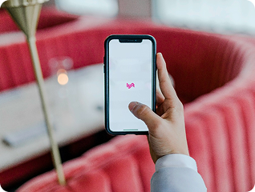

Hi, I'm Alex
a UI/UX Designer based in Los Angeles. With over 3 years of experience, I specialize in creating user-friendly digital products that solve real-world problems.
-
ShopEase

- Mobile
- Application
- E-Commerce
-
Insightly
💡
Developed a SaaS-based analytics dashboard for Insightly, focusing on providing actionable insights through a user-centric design. The dashboard improved data accessibility and was adopted by 80% of users within the first three months.
- Web 3.0
- HTML
- Dashboard